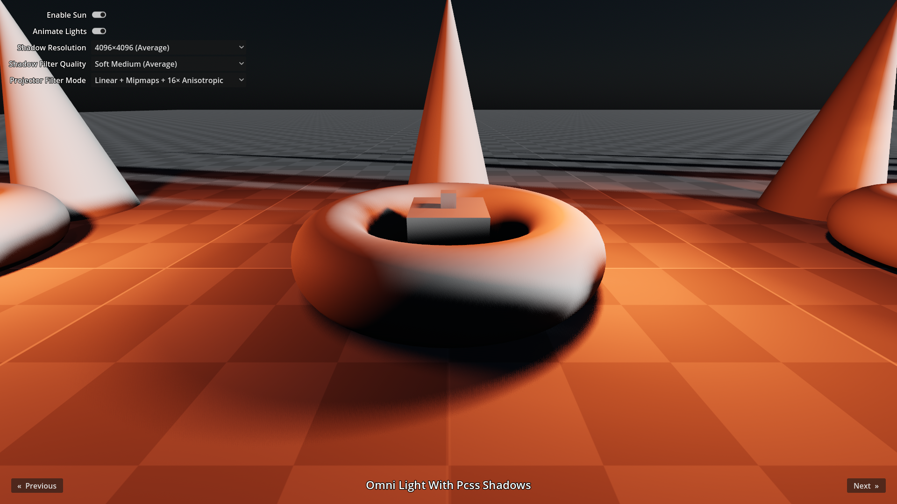
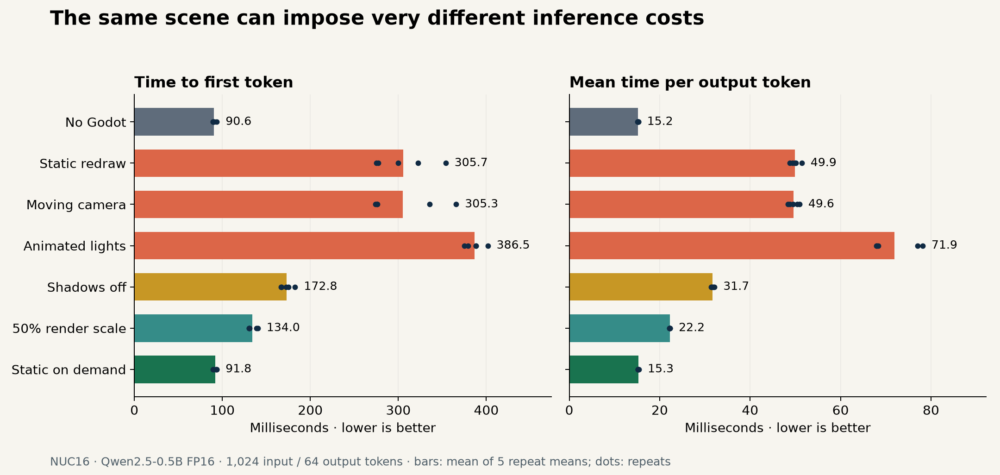
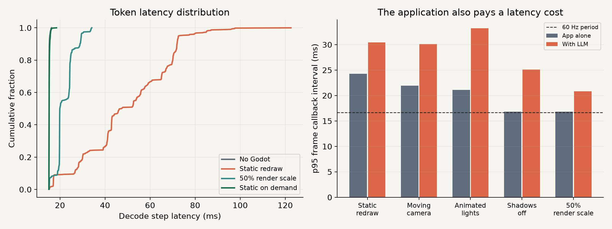
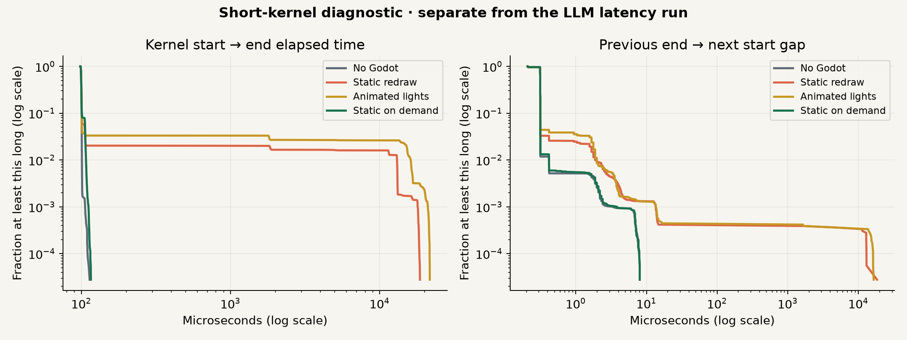
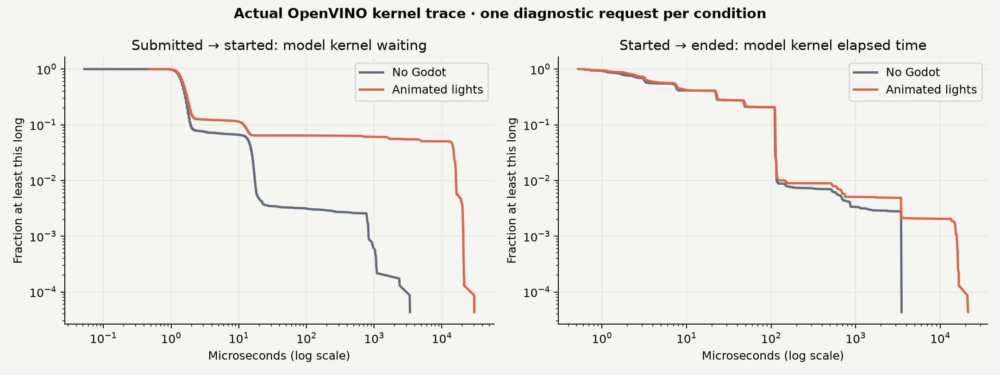
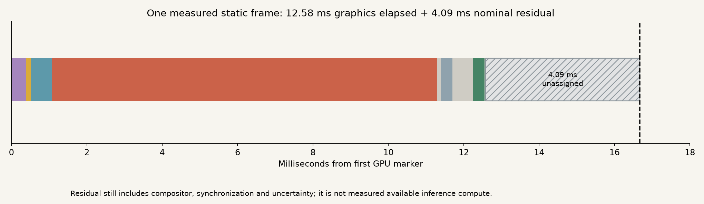
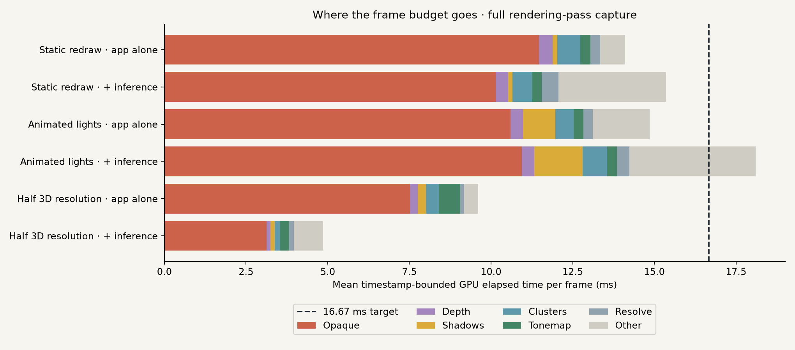
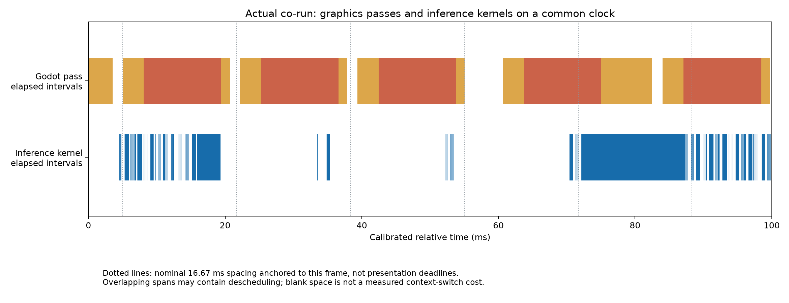
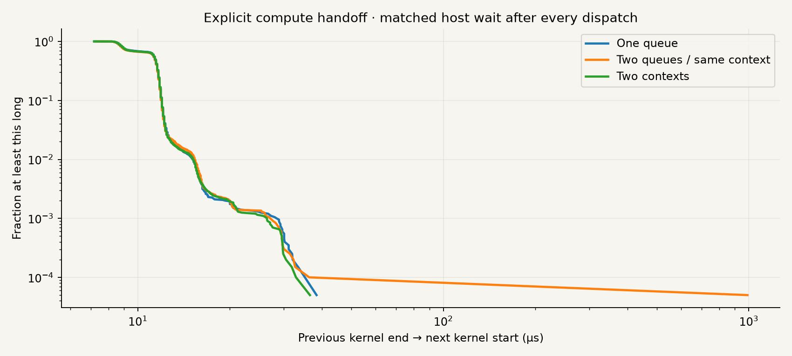
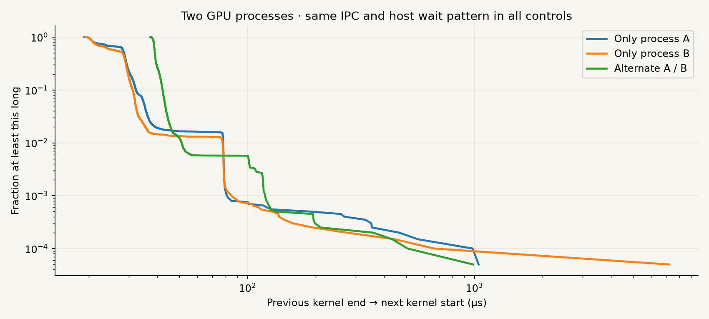

Application state is a scheduling input
The initial question was whether a graphical app and local inference interfere through iGPU time sharing. A more actionable question is: which application property tells us what work can be delayed or removed? The experiment changes one app's redraw behavior, motion, shadows and rendering resolution, then observes both LLM latency and the application's frame timing.
The clearest property here is “the visible scene has not changed.” Keeping the app open while suppressing repeated rendering changes mean TPOT from 49.91 ms to 15.26 ms. The no-Godot reference is 15.20 ms. This is a measured application intervention; it does not establish the GPU firmware's preemption mechanism.

The cost depends on what the app is doing

| Condition | Mean TTFT ms | Mean TPOT ms | Token p95 ms | TPOT / quiet | App-alone GPU p50 ms |
|---|---|---|---|---|---|
| No Godot | 90.6 | 15.20 | 15.50 | 1.00× | No repeated frames |
| Static redraw | 305.7 | 49.91 | 72.70 | 3.28× | 12.62 |
| Moving camera | 305.3 | 49.59 | 77.74 | 3.26× | 12.94 |
| Animated lights | 386.5 | 71.91 | 101.74 | 4.73× | 14.69 |
| Shadows off | 172.8 | 31.71 | 47.16 | 2.09× | 10.51 |
| 50% render scale | 134.0 | 22.21 | 29.46 | 1.46× | 9.98 |
| Static on demand | 91.8 | 15.26 | 15.70 | 1.00× | No repeated frames |
10 requests and 630 decode intervals per condition. Token p95 pools intervals and is descriptive, not an independent-trial confidence interval. GPU frame values are timestamp-bounded elapsed time; they are not exclusive engine occupancy. The on-demand condition produces no repeated frames after settling.
Static redraw keeps submitting graphics work even with no motion. Animated lights require updates and show a mean decode cost of 4.73× the no-Godot reference. Removing shadows and lowering 3D resolution reduce work but change visual quality. Stopping redraws applies only to the unchanged state tested here.

A finer view of the delay
A one-second utilization average hides bursts and interruptions. The diagnostic records four OpenCL event timestamps for each dispatch: queued → submitted → started → ended. Kernel start-to-end duration and the gap from one kernel's end to the next kernel's start answer different questions. Both can change under competing graphics work.

| Probe condition | Kernel p50 µs | Kernel p99.9 µs | Gap p50 µs | Gap p99.9 µs |
|---|---|---|---|---|
| No Godot | 99.7 | 105.9 | 0.3 | 2.8 |
| Static redraw | 99.8 | 17977.6 | 0.3 | 13.4 |
| Animated lights | 99.8 | 21046.5 | 0.3 | 13.5 |
| Static on demand | 99.8 | 111.7 | 0.3 | 3.5 |
The kernel-duration p99 is 13.07 ms for static redraw and 16.16 ms for animation, despite an approximately 0.10 ms median. In these captures, 2.01% and 3.32% of dispatches exceed 1 ms respectively; neither quiet nor on-demand records any above 1 ms. These are elapsed intervals, not inferred exclusive GPU execution time.
The model's own kernel trace
A separate Intel unitrace capture records 46,016 actual OpenVINO kernel dispatches across one quiet and one animated-light request. It exposes GEMM, RMS normalization, RoPE, SDPA, reorder and KV-concatenation kernels, including individual append, submit, start and end timestamps.

| Traced condition | Kernels | Kernel p50 µs | Kernel p99 µs | Submit-to-start p95 µs |
|---|---|---|---|---|
| No Godot | 23,008 | 7.39 | 116.45 | 14.11 |
| Animated lights | 23,008 | 7.60 | 131.06 | 13305.34 |
The waiting tail grows sharply in the animated capture. Submit-to-start delay includes ordinary waiting behind earlier work as well as interference; it is not an isolated measure of preemption cost. The captures demonstrate observable queue behavior, not a calibrated firmware scheduling model.
The full four-timestamp records and normalized model timeline are retained in the research workspace. The charts and tables above report their measured distributions; raw clocks from different interfaces are not overlaid.
The original capture exposed viewport boundaries only. The September 15 follow-up below adds individual rendering-pass intervals and a calibrated graphics/inference overlay.
The 1,000 µs Xe render-engine timeslice is a configuration value. A long kernel interval or gap does not by itself prove a context switch. Queued work, synchronization, preemption, frequency changes and resource contention can all affect elapsed time. Firmware-level preemption was not observed directly.
Measured inside the 16.67 ms frame budget
The earlier 4 ms graphics example was illustrative. In this Godot scene, static redraw takes 12.58 ms at the median, including 10.20 ms between the opaque-pass markers. Subtracting graphics from a 16.67 ms target leaves about 4.09 ms. This is a nominal residual, not a measured allocation of available inference compute.

Each rendering action has a measured interval
Enabling Godot's visual profiler exposes 45 timestamp markers. Consecutive differences follow the engine's own profiler convention. Hierarchical markers are flattened into non-overlapping intervals for accounting; CPU recording times appear separately because they overlap GPU activity.

| Condition | Frames | GPU p50 ms | GPU p95 ms | Residual at p50 ms | Residual at p95 ms |
|---|---|---|---|---|---|
| Static redraw · App alone | 840 | 12.58 | 19.97 | 4.09 | -3.30 |
| Static redraw · With inference | 1,664 | 12.51 | 28.18 | 4.16 | -11.51 |
| Animated lights · App alone | 850 | 14.67 | 15.64 | 1.99 | 1.02 |
| Animated lights · With inference | 2,294 | 15.60 | 30.71 | 1.06 | -14.05 |
| Half 3D resolution · App alone | 870 | 9.98 | 11.95 | 6.68 | 4.72 |
| Half 3D resolution · With inference | 870 | 4.09 | 12.19 | 12.57 | 4.48 |
A negative residual means this measured graphics interval alone exceeds the nominal budget. These are not physical missed-display-deadline counts. GPU frequency was not fixed, and app-only windows precede inference within each cell; the unexpectedly lower low-resolution elapsed time during inference must not be interpreted as an isolated scheduling improvement.
Individual static-scene actions: GPU elapsed and CPU recording costs
| Godot marker region | GPU p50 ms | GPU p95 ms | CPU p50 ms |
|---|---|---|---|
| Render Opaque Pass | 10.2010 | 16.6688 | 0.0080 |
| > Bake 3D Cluster | 0.4893 | 0.9910 | 0.0010 |
| Process Post Transparent Compositor Effects | 0.5579 | 0.5783 | 0.0000 |
| Render Depth Pre-Pass | 0.3693 | 0.6070 | 0.0060 |
| Tonemap | 0.3050 | 0.3229 | 0.0040 |
| Resolve | 0.3048 | 0.3198 | 0.0020 |
| Render Sky | 0.0834 | 0.0972 | 0.0020 |
| Render OmniLight Shadows | 0.0746 | 0.1063 | 0.0010 |
| Render 3D Cluster Elements | 0.0435 | 0.0746 | 0.0010 |
| Render Shadows | 0.0512 | 0.0938 | 0.0100 |
| Render CanvasItems | 0.0310 | 0.0342 | 0.0160 |
| < Bake 3D Cluster | 0.0191 | 0.0245 | 0.0000 |
| Setup 3D Scene | 0.0161 | 0.0240 | 0.0070 |
| Render 3D Transparent Pass | 0.0096 | 0.0106 | 0.0040 |
| Pack 3D Cluster Elements | 0.0021 | 0.0031 | 0.0010 |
| Pre Opaque Render | 0.0055 | 0.0097 | 0.0050 |
| Setup Sky | 0.0030 | 0.0049 | 0.0020 |
| Update Volumetric Fog | 0.0021 | 0.0036 | 0.0010 |
Regions with mean GPU duration below 1 µs are omitted here; complete aggregate marker statistics are in the numerical download. Names are the engine's labels, not a reconstruction of hidden driver work.
Graphics and actual inference on one clock

Vulkan calibrated timestamps map the graphics clock to CLOCK_MONOTONIC_RAW. OpenCL host-timer samples are checked against that same clock; unitrace maps inference events using paired device/host timestamps. The largest reported deviation among the selected Vulkan calibration anchors is 59.1 µs. This is an anchor bound, not a guarantee of end-to-end trace accuracy. Before/after anchors account for drift.
This short kernel capture is diagnostic only: performance counting and unitrace add substantial overhead. It contains 46,016 model kernels across quiet and animated requests. It is excluded from the 100-request latency comparison.
The handoff penalty we can measure
A separate test submits the same fixed-work kernel with one outstanding command, waits for completion, and then submits the next. Twenty randomized blocks compare one queue, two queues in one OpenCL context, and two OpenCL contexts. All conditions use the same host wait pattern, warmed resources and identical output checks.

| Handoff configuration | Dispatches | Gap p50 µs | Gap p95 µs | Host µs / dispatch |
|---|---|---|---|---|
| One queue | 20,000 | 11.36 | 12.19 | 41.52 |
| Two queues, one OpenCL context | 20,000 | 11.36 | 12.08 | 41.54 |
| Two OpenCL contexts | 20,000 | 11.36 | 12.19 | 41.51 |
Compared with one queue, alternating OpenCL contexts changes the mean inter-kernel gap by -0.00 µs per dispatch (paired block bootstrap 95% interval: -0.05 to 0.05 µs). Relative to two queues in one context, the difference is -0.02 µs. These are empirical contrasts for this dispatch pattern; OpenCL context changes do not map one-to-one onto observed hardware context switches.
Two independent processes: closer to two applications
Two workers independently open the GPU. Both remain alive, and the controller uses the same request/response IPC for every dispatch. Twenty randomized blocks compare A-only, B-only and alternating A/B, with 20,000 dispatches per condition and matching output hashes.

| Process pattern | Gap p50 µs | Gap p95 µs | Kernel p50 µs | Host µs / dispatch |
|---|---|---|---|---|
| Only process A | 28.54 | 35.21 | 30.42 | 58.62 |
| Only process B | 28.13 | 32.08 | 30.42 | 57.71 |
| Alternate processes A / B | 38.96 | 43.44 | 33.85 | 89.88 |
Alternating processes changes the mean inter-kernel gap by 12.58 µs relative to the average of the two single-process controls (paired block bootstrap 95% interval: 10.92 to 14.16 µs). The full host-observed dispatch cycle increases by 31.71 µs; kernel elapsed spans themselves increase by 19.17 µs on average. Thus the gap contrast alone is not the total penalty. These are effective handoff contrasts for these small kernels and this host dispatch pattern.
Hardware save/restore overhead remains unmeasured. Root-only Xe tracing is unavailable and the observation interface remains restricted. Neither an end-to-start gap nor a submitted-to-started delay is relabeled as firmware context-switch cost. Consequently, exclusive remaining inference compute cannot be obtained by subtracting these bars from 16.67 ms.
Instrumentation control and inference results
| App state | Full-pass TTFT ms | Full-pass TPOT ms | Profiler-disabled TPOT ms |
|---|---|---|---|
| No Godot | 90.46 | 15.39 | 15.26 |
| Static redraw | 274.34 | 49.56 | 49.19 |
| Animated lights | 390.61 | 71.70 | 72.77 |
| Half 3D resolution | 132.17 | 22.58 | 22.33 |
| On demand | 92.15 | 15.37 | 15.23 |
Ten requests per state per campaign, each using the same 1,024 input tokens and 64 generated tokens. All 100 outputs match. The campaigns ran sequentially, so the difference between profiler settings also contains time/order effects. Frame statistics pool correlated frames and are descriptive; the independent replication unit is the block.
The application property that matters here is the distribution of remaining rendering work, alongside whether that work is necessary. Mean slack alone is unsafe as an admission rule: the rendering tail can already exceed the frame target. An inference scheduler would need a conservative remaining-work estimate, bounded inference chunks, compositor reserve and observed deadline feedback before claiming deadline-safe admission.
Aggregate pass, handoff and latency results · 100-request latency table. Raw traces, scripts and calibration records are retained in the research workspace.
Interface references: Godot's consecutive-marker accounting; Vulkan calibrated timestamps; OpenCL clock correlation.
What an agent could do with these properties
| Observable app property | Intervention | Evidence in this study |
|---|---|---|
| Unchanged camera, lights and scene | Stop redraws until invalidated | Measured on-demand condition |
| Rendering quality is adjustable | Lower scale or shadow cost | Measured quality ablations |
| Predictable frame timing | Admit bounded LLM work between frames | Proposed; not implemented |
| Active animation or user interaction | Keep rendering; respect its deadline | Latency tradeoff measured |
In an agent loop, the controller can use the app's own state to recognize an unchanged view while waiting for inference. A production implementation must redraw on input, scene changes, resize, exposure and animation; this prototype simply holds a known static scene. The experiment does not measure interaction responsiveness or implement automatic invalidation.
For genuinely active graphics, frame-aware inference admission is a separate research step. It requires predictable GPU work boundaries, a way to limit submitted inference work, and measurements of both token latency and frame deadlines. The present measurements establish the potential value of app information, without claiming that unused frame time is automatically available as one contiguous inference slot.
Method, reproducibility and limits
NUC16, Intel Core Ultra 7 356H, integrated Intel Graphics (PTL), Linux 6.17.0-23, Mesa 25.2.8; Godot 4.5 stable (876b29033), official demo commit 52e30044658448149b04e8f69b475eebbfbd8f6e. Vulkan Forward+, PCSS preset, enabled sun, 60 FPS cap and a GPU-backed GNOME virtual Wayland desktop at 1920×1080@60. The same compositor stays running in the no-Godot condition.
Inference uses Qwen2.5-0.5B FP16 and OpenVINO 2026.0 with the LATENCY hint, 1,024 fixed pretokenized input tokens and 64 greedy output tokens. EOS is ignored to hold the output length fixed. A Gather before the final language-model head projects only the last hidden token while preserving KV state. One resident model is compiled and warmed before the comparisons; each request resets state.
TTFT starts at synchronous prefill execution and ends after first-token argmax. TPOT averages the next 63 decode steps, including input construction, inference and argmax. Tokenization, compilation, transport, reset and benchmark-control messages are excluded. These are local inference timings, not end-to-end chat latency. A CPU FP32 comparison on a 32-token prefill has cosine similarity 0.99999921, relative L2 error 0.00132, and matching top-1. All 70 measured requests produce the same 64-token sequence.
Controls, uncertainty and excluded data
- Five randomized blocks are exploratory repetitions on one machine and one small model, not evidence across all applications or LLM sizes. Raw per-request results and repeat-level bootstrap ratios are downloadable.
- Each non-quiet cell launches a fresh app, settles for three seconds, then records three seconds of app-only rendering. Shader/LLM startup is outside measurement. Failed pre-renderer launches are logged and retried.
- An earlier short-warmup probe, an incomplete windowed pass and camera-setup pilots are retained in the research archive but excluded from all reported aggregates.
- The compositor reports no Wayland FIFO protocol, which limits frame pacing fidelity. This setup does not establish behavior on a physical desktop monitor.
- Two verified old background stress/monitor processes are suspended during collection and restored afterward. Other ordinary OS services remain; no claim of a perfectly isolated machine is made.
- No hardware frequency, bandwidth or cache-contention intervention was performed. Kernel tracefs and Xe observation counters were not accessible without privileges, so exact preemption causality remains unresolved. No timeslice setting was changed.
Before running, approximately 81 GB of disk space was recovered from verified rebuildable OpenVINO compiled caches, pip download caches and ccache. Source models, datasets, source code and original measurement evidence were preserved. New runs use separate immutable directories.
Measurement tables and reproduction
Per-request latency CSV · Aggregate inference, frame and kernel results
The protocol, pinned app version and metric definitions are specified above. Full scripts, machine configuration and raw timestamp records are retained in the local research workspace and on NUC16.
Primary interface references
- Official pinned demo and its camera/light controls.
- Godot RenderingServer: viewport GPU timing and render-loop control; RenderingDevice: captured timestamps.
- OpenCL event profiling specification: queued, submit, start and end timestamps.
- Intel PTI unitrace: kernel submission timing, device traces and conditional collection.
- Linux Xe DRM usage statistics: per-client accounting, distinct from a preemption trace.
- OpenVINO GPU documentation: GPU execution and compiled caches.